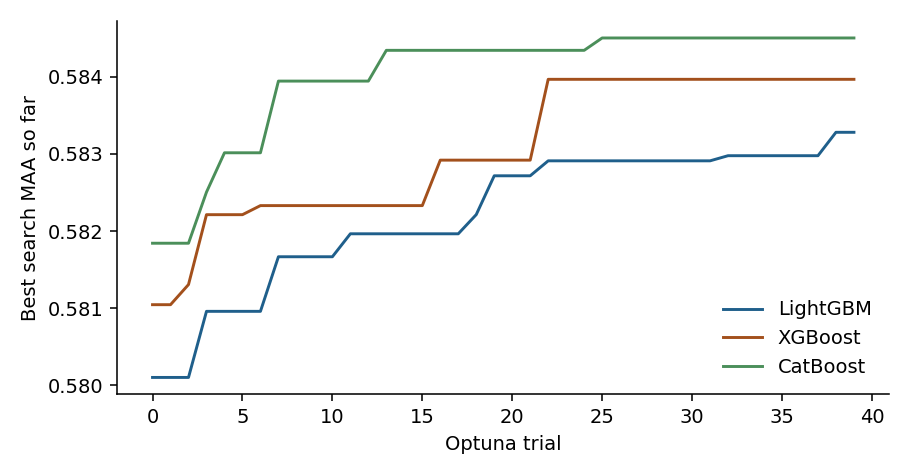

Baselines and methods
Simple rules first, then three kinds of models
We add one idea at a time. A more complex model is kept only if it clearly beats the simpler one on validation data.
Baselines (simple rules)
- Training-label majority. Always guess the more common answer in the training data. It uses no information about the session. It is the floor.
- First-half skip majority. Guess "skip" if more than half of the history songs were skipped, otherwise "keep".
- Copy last skip. Guess that the next songs will be treated like the last history song. This tests how much a session "keeps going the same way". It is the strongest simple rule, so we compare every model with it.
- Popularity only. A logistic regression that uses only the popularity of the song. It shows how much a fixed song property helps.
Models that learn
1. Logistic regression (popularity + history)
Idea: a straight-line score from the inputs, turned into a probability. Why we use it: it is simple and easy to explain. It shows how much the history alone can explain without any audio features and without complex patterns. We choose its strength of regularisation (C) with cross-validation.
2. Random forest
Idea: many decision trees, each trained on a random sample, whose votes are averaged. Why we use it: it can find patterns that combine features, for example "many recent skips and a song that sounds very different from the kept songs", and it is hard to overfit by accident. It uses all four feature groups.
3. Boosted trees (our main model family)
Idea: trees are added one by one. Each new tree is trained to fix the mistakes of the trees before it. Why we use it: this is usually the best classical method for tables of numbers like ours, and published solutions of this challenge used it too. The proposal named "boosted trees" without a library, so we compare the three common ones on exactly the same data and folds: LightGBM, XGBoost and CatBoost.
What each method optimises and what it assumes
To check that each method fits the question and the data, the table states each method's objective (what it is fitted to make small) and its main assumptions, and what we did about each assumption.
| Method | Objective | Main assumptions | What we did about it |
|---|---|---|---|
| Majority and copy-last rules | None (no fitting) | Majority: every song has the same skip chance. Copy last: the second half continues the way the first half ended. | Used only as reference points. Copy last is the bar every model must clear. |
| Logistic regression | Log loss (cross-entropy) plus an L2 penalty; C sets how weak the penalty is | The log-odds of a skip is a straight-line (additive) function of the inputs. Inputs on similar scales, so the penalty treats them fairly. Category codes have no order. | Inputs are scaled and missing values filled with the median inside each training fold. Category codes (ctx_last, rs_last, re_last) are one-hot encoded; the pattern codes pat3/pat4 are left out because their numbers are not ordered. C is chosen by cross-validation. Songs in a session are not independent, so we use the model only to predict and report no p-values. |
| Random forest | Each tree splits to reduce Gini impurity; the forest averages the trees | No straight-line or scaling assumption. Assumes the trees are different enough that averaging removes noise. | Each split looks at a random subset of features (sqrt). Missing values are filled with the median (fitted on training folds). Tree depth and leaf size are tuned. |
| LightGBM, XGBoost, CatBoost | Log loss, reduced step by step by adding small trees (gradient boosting), with L1/L2 penalties and limits on tree size | No straight-line or scaling assumption; interactions are learned. The patterns found in development sessions hold for new sessions. Overfitting is controlled by the learning rate, tree size and penalties. | Missing values are handled by the libraries. Tree size, learning rate, number of trees and penalties are searched with Optuna on grouped folds. |
| All models | Sessions are independent of each other, and test sessions come from the same population as development sessions. The random split by session makes the second assumption reasonable inside this dataset; it says nothing about other platforms or times (Limitations page). The models are fitted on log loss, but chosen on MAA, the score of the task. | ||
How we chose the boosting settings
Boosted trees have many settings (number of trees, tree size, learning speed and so on). Trying them by hand is slow and unfair. We used Optuna, a tool that tries settings one after another and learns which ranges work well. Steps:
- For each library we ran 40 trials. Each trial is scored with 5-fold cross-validation on the development sessions only. The score is MAA.
- Trial 0 is the setting we used before the search, so the search can only improve on it.
- The five best trials are scored again on three new fold splits (15 folds in total). The final choice is made on that second score, because it is less affected by one lucky split.
- Settings within 0.001 MAA of the best are treated as equal, and the smaller model wins. Among libraries within 0.001, we pick LightGBM, because its trees are easy to export for the explorer.

Best search score found so far, trial by trial. The curves go flat quickly: the models are not very sensitive to their settings.